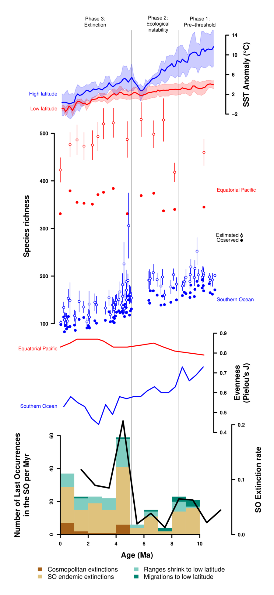
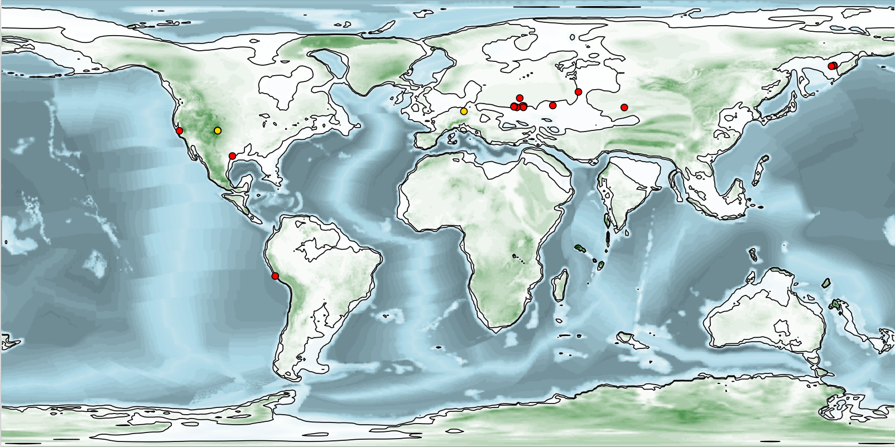
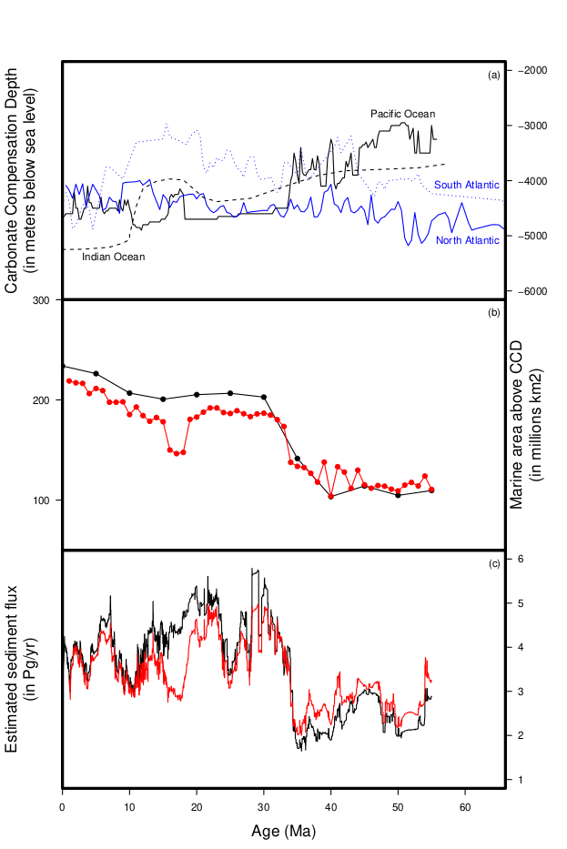
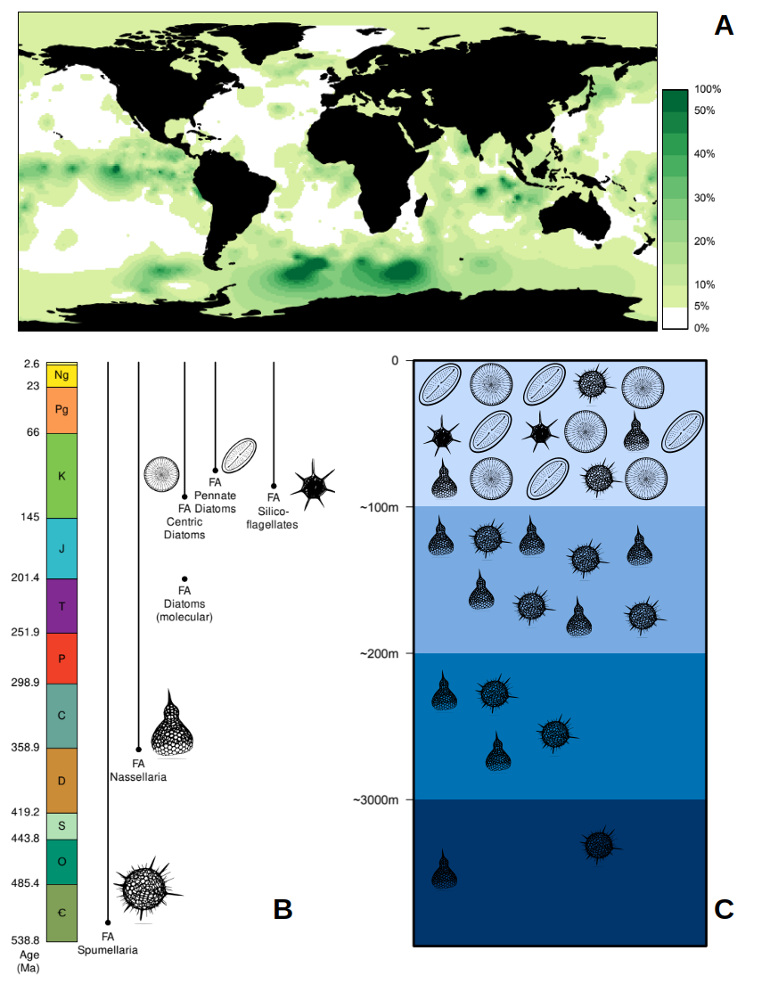

Re-reading this blogI know: vanity!, I realized that there was a time where I used to write a post for each papers we published. Since 2023 however I stopped doing so, despite, or maybe because of, pubishing quite a larger amount of papers than before. So I thought it might be a good idea to do a 'MS recap' of the last few years.
Here it goes:
- Smith et al. 2023 and Fastovich et al. 2025: as I mentioned in 2023, I had the opportunity to contribute, as the maintainer of Neptune, to the BioDEEPtime project. The idea was to build a (meta-)database of biological and paleontological time-series to study the tempo and time frequency of ecological (or evolutionary) disturbance and compare that to the rythm of climatic change through time. The first MS describe the database itself while the second showcase the first of such analysis (here on the pollen record and thus terrestrial vegetation).
-
Trubovitz et al. 2023 and 2024: the first is the last paper of Sarah's thesis. Building on her 2020 paper (and my 2013 thesis paper), Sarah showed that a taxon abundance is a poor predictor of its longevity. The second paper is a 'public outreach'-type paper, directed primarily to master students, summarizing the work we've been doing (between Sarah's thesis and mine) in radiolarian conservation paleobiology and why it matters to climate science. I am particularly proud of the graphics in the latter paper I must say :)

Go on and tell me on don't do nice graphs, I dare you! From Trubovitz et al. 2024.
- Rodrigues de Faria et al. 2024, Özen et al. 2025 and 2026: those are the main results, from our students, of the MOPGA project that employed us from 2018 to 2022! There are still at least 3 papers to come but those ones were, I think, the most important ones dealing with Southern Ocean paleoproductivity at the Eocene-Oligocene boundary, and the role of diatoms in it, and how it affected the end Eocene climatic events. Super proud of Gabrielle and Volkan for those papers!
-
Figus et al. 2024, 2025a and 2025b: this is a big block of papers from Cecile Figus' thesis. Cécile and Jakub (her thesis advisor) had been in contact with me since quite a while now about this work, and I hosted Cécile at the MfN in 2024 to work on this. It all stemmed from my 2016 paper and trying first to look at diatom deposition in land sections, and then more broadly to what happened in the open ocean with a more thorough compilation of diatom-bearing sites (my 2016 compilation was limited to sites for which quantitative estimates were available). The last of the three is a paper bringing new biogenic silica data for the Paleocene, a period that was completely ignored in my old compilation.

Here is one of the many cool paleogeographic maps I made for those projects! (this one for Figus et al. 2024)
- Sandin et al. 2025a and 2025b: a long time coming and a huge source of pride for me! Miguel contacted me a few years back to help him recalibrate his phylogenetic tree of radiolarians (together with Nori Suzuki) and to calculate the ages of some of the main nodes using a different method (rootBBB), using different data (fossil occurrences instead of genomic sequences), as a second line of evidence to confirm or disprove the ages found using the standard method.
-
Renaudie & Lazarus 2025: this is a big one with a long story behind it. What started as a comment on someone else's paperWith apologies to Sophie! Love your model, but I still think some of the data it was instantiated with weere biased :) ended up as a behemoth of a study trying to provide a first order, unbiased, estimate of Cenozoic sediment flux using our huge collection of age models from the Neptune database. I put a lot of my science programming know-how in this one, despite being almost certain it will be most likely not cited a lot (very niche and frankly very complex). But well, I still like it and stand by it. Somebody had to do it.

A lot of work went into making this graph that maybe a couple of people will ever use :)
- Dowding et al. 2026: I actually didn't mention it yet on this blog but I did contribute to another of the PaleoSynthesis Center's workshops in 2024. The IRAL project is a think-tank (if I may call it like that) of people involved in making, maintaining and using paleontological databases, and this paper detailed our thoughts on the current issues we're facing and our recommandations for the future of the field. I must admit that when we started writing this paper I did not think our database, Neptune, would be such a selling point of the paper's message but well here we are :)
- Horikawa et al. 2025: this paper presents the main results of Expedition 379 of which I hinted in a previous post a long time ago.
-
Figus et al. 2026 and McCoy et al. 2026: two additional 'Public Outreach'-type papers destined to Master students in the context of the TIMES project. The first one on the use of siliceous microfossils in climate science and the second a review of stratigraphic databases.

With another banger of a graph from yours truly. From Figus et al. 2026.
- Foster et al. 2023: finally, after nearly 20 years of working on Cenozoic radiolarians, I was able to put my taxonomic skills to use on Mesozoic/Paleozoic radiolarians. Very satisfying!
- Coiffard et al. 2023 and Ponstein et al. 2024: when a buddy asks me to help on their project with my computing skills, even if it's outside of my field of expertise, I do not know how to say no apparently :)